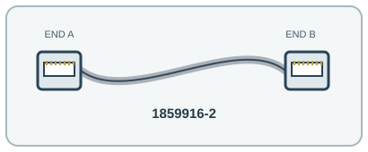

[ INDIVIDUAL COMPONENT // COPPER ETHERNET PATCH CORD ]
CommScope 1859916-2 2 m Cat6A S/FTP RJ45 Patch Cord
A 2 m shielded Cat6A patch lead with low-smoke jacket for structured Ethernet links.

IDENTIFICATION: Exact manufacturer model/SKU: CommScope 1859916-2. Connector fit alone does not establish electrical, optical, protocol or platform compatibility.
Product specifications
| Manufacturer model / SKU | CommScope 1859916-2 |
|---|---|
| Product type | COPPER ETHERNET PATCH CORD |
| Connector/end types | RJ45 (8P8C) plug → RJ45 (8P8C) plug; four-pair T568B straight-through patch cord. |
| Fiber grade / Ethernet category | Category 6A (Cat6A), 30 AWG stranded copper, 4 pairs, 100 Ω. |
| Length | 2 m. |
| Bend radius and shielding | S/FTP shielded twisted pair with LSZH jacket, white. CommScope’s cited product page does not specify a numeric minimum bend radius; preserve bend clearance and follow the installer’s Cat6A channel requirements. |
| Speed / distance limits | Cat6A supports 10GBASE-T up to 100 m for a compliant full channel; this is a 2 m patch cord, not a 100 m standalone link. 100 m is the Cat6A-compliant channel limit, not the length or isolated reach of this 2 m cord. |
| Compatibility | RJ45 Cat6A switches, servers, patch panels and network interface ports; verify shield bonding and channel design for PoE or high-power remote power. Backward compatible with lower Ethernet categories at the rate supported by the full link. |
Compatibility and handling
RJ45 Cat6A switches, servers, patch panels and network interface ports; verify shield bonding and channel design for PoE or high-power remote power. Backward compatible with lower Ethernet categories at the rate supported by the full link.
Bend-radius note: No numeric minimum bend radius is published on the manufacturer pages cited here; avoid kinking and preserve the specified installation bend clearance.
Shielding / jacket: S/FTP (individually foiled pairs and overall screen), LSZH outer jacket.
Inspect the jacket, strain relief, latch and end faces before use. For optical assemblies, keep dust caps in place and never look into a live fiber. For copper/active-end assemblies, avoid tight bends and cable crushing; validate PoE and device compatibility from the relevant port documentation.
Manufacturer sources and technical references
- CommScope — 1859916-2 product recordExact model, 2 m length, Cat6A, connectors and manufacturer product data.
- CommScope — 1859916 Cat6A patch-cord familyManufacturer family specifications and Category 6A compatibility.
- IEEE 802.3 — Ethernet standards working groupEthernet PHY standards; deployed channel reach depends on compliant cabling and equipment.
Manufacturer sources are HTTPS. Limits quoted here are link/application limits: the installed cable channel, transceivers, connectors, port support and installation quality determine actual service. Confirm model revision and regional documentation before deployment.